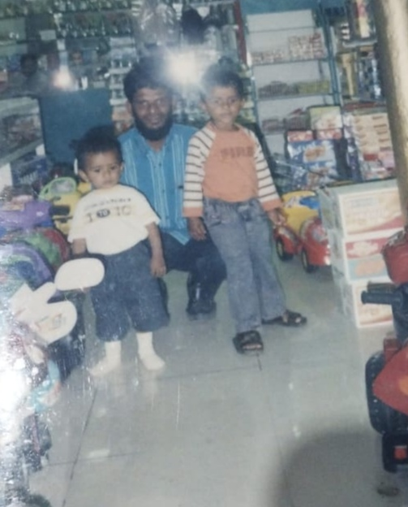

السلام عليكم ورحمة الله وبركاته يا أبي
أفضل أبٍ في هذا العالم
من ابنتك الصغرى
اضغط هنا يا أبي ❤️
رسالة إلى أبي ❤️

Happy Father's Day.
ഇന്ന് ഞാൻ ഒരുപാട് കാലമായി ഉപ്പാനോട് പറയണം എന്ന് വിചാരിച്ചിരുന്ന ചില കാര്യങ്ങൾ പറയാനാണ് എഴുതുന്നത്.
ഇനി ഏതാനും മാസങ്ങൾക്കുള്ളിൽ എനിക്ക് 18 വയസ്സ് തികയും. അങ്ങനെ എന്റെ ജീവിതത്തെക്കുറിച്ചും പടച്ചോൻ എനിക്ക് തന്ന അനുഗ്രഹങ്ങളെക്കുറിച്ചും ആലോചിക്കുമ്പോൾ ഒരു കാര്യം എനിക്ക് വളരെ ക്ലിയറാണ്.
പടച്ചോന്റെ അനുഗ്രഹവും ഉപ്പയുടെ ഹാർഡ് വർക്കും കൊണ്ടാണ് എന്റെ ഈ 18 വർഷം ഇത്രയും മനോഹരമായത്.
ഉപ്പയുടെ ജീവിതത്തെക്കുറിച്ച് ആലോചിക്കുമ്പോൾ, ഞങ്ങൾക്കുവേണ്ടി ഉപ്പ എത്രമാത്രം ത്യാഗം ചെയ്തിട്ടുണ്ടെന്ന് ഇപ്പോഴാണ് ശരിക്കും മനസ്സിലാവുന്നത്.
വെറും 19 വയസ്സുള്ളപ്പോൾ, മറ്റുള്ളവർ സ്വന്തം ജീവിതത്തെക്കുറിച്ചും സ്വപ്നങ്ങളെക്കുറിച്ചും ചിന്തിക്കുന്ന സമയത്ത്, ഉപ്പ സ്വന്തം സ്വപ്നങ്ങൾ ഒന്ന് മാറ്റിവെക്കേണ്ടി വന്നു.
ഇപ്പപ്പാ മരിച്ചതിനു ശേഷം ഈ കുടുംബത്തിന്റെ താങ്ങും തണലുമായി മാറിയത് ഉപ്പയാണ്.
മൂത്ത മോനെന്ന നിലയിൽ ചെയ്യാൻ പറ്റുന്നതെല്ലാം ഉപ്പ ചെയ്തു.
പഠിക്കാൻ മിടുക്കാനായിട്ടും കുടുംബത്തിന്ചി വേണ്ടി ആ ആഗ്രഹം ത്യാഗം ചെയ്തു.
ഇപ്പോൾ വലിയ പ്രായമായ ആളുകൾ പോലും ഏറ്റെടുക്കാൻ മടിക്കുന്ന ഉത്തരവാദിത്തങ്ങൾ, ഉപ്പ ചെറുപ്പത്തിൽ തന്നെ ഏറ്റെടുത്തു.
ഉപ്പ വീട് വിട്ട് സൗദിയിലേക്ക് പോയത് അത് എളുപ്പമായതുകൊണ്ടല്ല. പക്ഷേ കുടുംബത്തിന് ഉപ്പയെ ആവശ്യമുണ്ടെന്ന് ഉപ്പയ്ക്ക് അറിയാമായിരുന്നു.
ചെറുപ്പത്തിൽ തന്നെ കല്യാണം കഴിച്ചു, ഒരു കുടുംബം ഉണ്ടാക്കി, ഒരു കുട്ടി ആഗ്രഹിക്കാവുന്നതിൽ വെച്ച് ഏറ്റവും നല്ല ജീവിതം ഞങ്ങൾക്ക് നൽകി.
ഇന്ന് ഞങ്ങൾക്ക് സ്നേഹത്തിനോ, വിദ്യാഭ്യാസത്തിനോ, സൗകര്യങ്ങൾക്കോ, അവസരങ്ങൾക്കോ ഒരു കുറവും വരാതിരുന്നത് ഉപ്പയുടെ ഹാർഡ് വർക്കുകൊണ്ടാണ്.
ഞങ്ങളുടെ ജീവിതത്തിൽ ഉള്ള ഓരോ നല്ല കാര്യത്തിന്റെയും പിന്നിൽ ഉപ്പയുടെ കഷ്ടപ്പാടും ത്യാഗവും ഉണ്ട്.
മൂന്നാം ക്ലാസ് വരെ ഞാൻ സൗദിയിൽ ഉപ്പയുടെ കൂടെയായിരുന്നു. അതിന് ശേഷം ഞങ്ങൾ കേരളത്തിലേക്ക് വന്നു, ഇവിടെ സെറ്റിൽ ആയി. പക്ഷേ ഞങ്ങൾ എല്ലാവരും ഒരുമിച്ച് ജീവിക്കുമ്പോൾ, ഉപ്പ അവിടെ ഒറ്റയ്ക്കായി.
2017 മുതൽ ഇന്നുവരെ, ഉമ്മയില്ലാതെ, മക്കളില്ലാതെ, കുടുംബമില്ലാതെ, ഉപ്പ അവിടെ ഒറ്റയ്ക്കാണ് ജീവിക്കുന്നത്.
ഞങ്ങൾ ഇവിടെ ഒരുമിച്ച് ഭക്ഷണം കഴിക്കുമ്പോൾ, പലപ്പോഴും ഉപ്പ അവിടെ ഒറ്റയ്ക്ക് എന്തെങ്കിലും ഉണ്ടാക്കി കഴിച്ചിട്ട് ദിവസം തള്ളിനീക്കുകയാണ്.
ഞങ്ങൾ അനുഭവിക്കുന്ന ഓരോ സൗകര്യത്തിന്റെയും പിന്നിൽ ഉപ്പയുടെ ഏകാന്തതയും കഷ്ടപ്പാടും ആണ്.
ഉപ്പയ്ക്ക് അവിടെ ഒറ്റയ്ക്ക് ജീവിക്കുന്നത് മടുത്തിട്ടുണ്ടെന്ന് എനിക്കറിയാം. ആരോഗ്യപ്രശ്നങ്ങളും അലർജിയും ഒക്കെ ബുദ്ധിമുട്ടുണ്ടാക്കുന്നുണ്ടെന്ന് എനിക്കറിയാം.
എന്നിട്ടും ഞങ്ങൾക്കൊരു നല്ല ഭാവി ഉണ്ടാവണം എന്നൊരു കാരണത്താൽ ഉപ്പ ഇപ്പോഴും അവിടെ നിൽക്കുകയാണ്.
അതൊരു ത്യാഗമാണ്. ഞാൻ ജീവിതത്തിൽ ഒരിക്കലും പൂർണ്ണമായി തിരിച്ചു നൽകാൻ കഴിയാത്ത ഒരു ത്യാഗം.

ഉപ്പാ, എന്റെ മനസ്സിൽ എപ്പോഴും കിടക്കുന്ന ഒരു കാര്യം കൂടി പറയാനുണ്ട്.
ഞാൻ ചെറുപ്പത്തിൽ, കൂട്ടുകാർ കളിയാക്കുമെന്നു കരുതി, ഉപ്പ എന്റെ വാനിന്റെ അടുത്തേക്ക് വരണ്ട എന്ന് പറഞ്ഞിട്ടുണ്ടെന്ന് ഉമ്മ പറഞ്ഞിരുന്നു.
അന്ന് ഞാൻ ഒരു കുട്ടിയായിരുന്നു. ഞാൻ എന്താണ് പറയുന്നതെന്ന് പോലും എനിക്ക് അറിയില്ലായിരുന്നു.
പക്ഷേ ഇന്ന് അതിനെക്കുറിച്ച് ആലോചിക്കുമ്പോൾ എനിക്ക് നല്ല സങ്കടം ഉണ്ട്.
ഉപ്പയ്ക്ക് അന്ന് എങ്ങനെയായിരിക്കും തോന്നിയിട്ടുണ്ടാവുക എന്ന് എനിക്ക് അറിയില്ല.
എന്തായാലും, അതിനുവേണ്ടി ഞാൻ മനസ്സറിഞ്ഞ് മാപ്പ് ചോദിക്കുന്നു.
ഇന്ന് എനിക്ക് അറിയാം, ഒരു മനുഷ്യന്റെ വില അവന്റെ നിറം കൊണ്ടോ രൂപം കൊണ്ടോ പണം കൊണ്ടോ അല്ല അളക്കപ്പെടുന്നത്.
അവന്റെ സ്വഭാവം, ഈമാൻ, കരുണ, സത്യസന്ധത, ത്യാഗങ്ങൾ, മറ്റുള്ളവർക്കു നൽകുന്ന സ്നേഹം — അതൊക്കെയാണ് ഒരു മനുഷ്യന്റെ യഥാർത്ഥ വില.
അങ്ങനെ നോക്കിയാൽ, എനിക്ക് അറിയാവുന്ന ഏറ്റവും വലിയ മനുഷ്യരിൽ ഒരാളാണ് എന്റെ ഉപ്പ.
അറിഞ്ഞോ അറിയാതെയോ ഞാൻ ചെയ്ത എന്തെങ്കിലും തെറ്റിന് ഉപ്പാന്റെ മനസ് വേദനിച്ചിട്ടുണ്ടേൽ sorry.
ഉപ്പ എനിക്ക് തന്ന ഏറ്റവും വലിയ സമ്മാനങ്ങളിൽ ഒന്ന് എന്റെ ദീനാണ്.
ഇന്ന് എനിക്ക് ഇസ്ലാമിനോട് എന്തെങ്കിലും സ്നേഹമുണ്ടെങ്കിൽ, നിസ്കാരത്തിന്റെ വില അറിയാമെങ്കിൽ, ദുആയുടെ വില അറിയാമെങ്കിൽ, അല്ലാഹുവിനെ ഓർക്കാൻ പഠിച്ചിട്ടുണ്ടെങ്കിൽ, അതിന്റെ പിന്നിൽ ഉപ്പയാണ്.
ഞാൻ പർഫെക്റ്റ് അല്ല. പക്ഷേ എന്റെ ദീനിൽ ഉള്ള നല്ല കാര്യങ്ങൾ എല്ലാം ഉപ്പ എന്നെ പഠിപ്പിച്ചതും ഓർമ്മിപ്പിച്ചതും ജീവിതം കൊണ്ട് കാണിച്ചു തന്നതുമാണ്.
ഒരു നല്ല ജീവിതം തന്നതിന് മാത്രമല്ല, എന്റെ ദീനും തന്നതിന് നന്ദി ഉപ്പാ.
ഉപ്പ എന്നെ പഠിപ്പിച്ചത് ഉത്തരവാദിത്തം എന്താണെന്നും, ത്യാഗം എന്താണെന്നും, യഥാർത്ഥ സ്നേഹം എന്താണെന്നും ആണ്.
വാക്കുകൾ കൊണ്ട് അല്ല, ജീവിതം കൊണ്ട്.
എനിക്ക് ഉപ്പാനെ ഒരുപാട് ഇഷ്ടമാണ്.
ഞാൻ ഉപ്പയുടെ മകളാണെന്ന് പറയാൻ എനിക്ക് ഭയങ്കര അഭിമാനമാണ്.
എന്റെ ജീവിതത്തിൽ ഞാൻ അഭിമാനിക്കുന്ന ഒരുപാട് കാര്യങ്ങൾ ഉണ്ടാവാം. പക്ഷേ ഉപ്പയുടെ മകൾ ആണെന്ന് പറയാൻ കഴിയുന്നതുപോലെ മറ്റൊന്നും എനിക്ക് അഭിമാനം തരുന്നില്ല.
❤️ To Be Continued In Part 3 ❤️
ഞാൻ പർഫെക്റ്റ് അല്ല. പക്ഷേ എന്റെ ദീനിൽ ഉള്ള നല്ല കാര്യങ്ങൾ എല്ലാം ഉപ്പ എന്നെ പഠിപ്പിച്ചതും ഓർമ്മിപ്പിച്ചതും ജീവിതം കൊണ്ട് കാണിച്ചു തന്നതുമാണ്.
ഒരു നല്ല ജീവിതം തന്നതിന് മാത്രമല്ല, എന്റെ ദീനും തന്നതിന് നന്ദി ഉപ്പാ.
ഉപ്പ എന്നെ പഠിപ്പിച്ചത് ഉത്തരവാദിത്തം എന്താണെന്നും, ത്യാഗം എന്താണെന്നും, യഥാർത്ഥ സ്നേഹം എന്താണെന്നും ആണ്.
വാക്കുകൾ കൊണ്ട് അല്ല, ജീവിതം കൊണ്ട്.
എന്റെ ജീവിതത്തിൽ ഞാൻ ഉപ്പയോട് വേണ്ടത്ര സ്നേഹം പ്രകടിപ്പിച്ചിട്ടുണ്ടോ എന്നെനിക്ക് അറിയില്ല.
പക്ഷേ ഇന്ന് ഒരു കാര്യം പറയണം.
എനിക്ക് ഉപ്പാനെ ഒരുപാട് ഇഷ്ടമാണ്.
ഞാൻ ഉപ്പയുടെ മകളാണെന്ന് പറയാൻ എനിക്ക് ഭയങ്കര അഭിമാനമാണ്.
എന്റെ ജീവിതത്തിൽ ഞാൻ അഭിമാനിക്കുന്ന ഒരുപാട് കാര്യങ്ങൾ ഉണ്ടാവാം. പക്ഷേ ഉപ്പയുടെ മകൾ ആണെന്ന് പറയാൻ കഴിയുന്നതുപോലെ മറ്റൊന്നും എനിക്ക് അഭിമാനം തരുന്നില്ല.
ആ അഭിമാനം ഞാൻ ജീവിതകാലം മുഴുവൻ കൊണ്ടുനടക്കും.
ഉപ്പ ഞങ്ങൾക്ക് നൽകിയ ജീവിതം ഞാൻ ഒരിക്കലും തിരിച്ചു നൽകാൻ കഴിയില്ലെന്ന് എനിക്കറിയാം.
ഉപ്പ ചെയ്ത ത്യാഗങ്ങൾ പോലെ ത്യാഗം ചെയ്യാനും എനിക്ക് കഴിയുമോ എന്നറിയില്ല.
പക്ഷേ ഒരു കാര്യം
إن شاء الله, ഞാൻ എന്റെ കഴിവിന്റെ പരമാവധി ശ്രമിക്കും.
ഉപ്പയെ സന്തോഷിപ്പിക്കാനും, അഭിമാനിപ്പിക്കാനും, ഉപ്പ കണ്ട സ്വപ്നങ്ങൾ പൂർത്തിയാക്കാനും ഞാൻ ശ്രമിക്കും.
ആ ദിവസം കാണാൻ അല്ലാഹു നമുക്ക് തൗഫീഖ് നൽകട്ടെ. ആമീൻ.
ഭാവിയിൽ എന്താണ് അല്ലാഹു എഴുതി വെച്ചിട്ടുള്ളതെന്ന് എനിക്കറിയില്ല.
ഞാൻ എന്റെ ബെസ്റ്റ് കൊടുക്കും.
കഷ്ടപ്പെടും.
സത്യസന്ധമായി ജീവിക്കും.
ഉപ്പ ഞങ്ങളുടെ ഭാരങ്ങൾ ചുമന്നതുപോലെ, ഒരുദിവസം ഉപ്പയുടെ ഭാരങ്ങൾ കുറയ്ക്കാൻ കഴിയുന്ന ഒരാളാകാൻ ഞാൻ ശ്രമിക്കും.
إن شاء الله, ഉപ്പ എനിക്ക് നൽകിയതിന്റെ ഒരു ചെറിയ ഭാഗമെങ്കിലും തിരിച്ചു നൽകാൻ എനിക്ക് കഴിയട്ടെ. ആമീൻ.
ഓരോ ത്യാഗത്തിനും നന്ദി.
ഓരോ ദുആയ്ക്കും നന്ദി.
ഞങ്ങൾക്കുവേണ്ടി ഒറ്റയ്ക്ക് കഴിഞ്ഞ ഓരോ ദിവസത്തിനും നന്ദി.
ഞങ്ങളെ പഠിപ്പിച്ച ഓരോ പാഠത്തിനും നന്ദി.
ഞങ്ങൾക്ക് ഒരു മനോഹരമായ ജീവിതം തന്നതിന് നന്ദി.
എന്റെ ദീൻ സംരക്ഷിക്കാൻ സഹായിച്ചതിന് നന്ദി.
جزاك الله خيرًا، أُبَّا
എനിക്കും, നമ്മുടെ കുടുംബത്തിനും, എന്റെ ദുനിയാക്കും, എന്റെ ദീനിനും വേണ്ടി ഉപ്പ ചെയ്ത എല്ലാത്തിനും.
بارك الله فيكم، أُبَّا.
ഉപ്പ എത്ര ദൂരെയായാലും, ഉപ്പ എപ്പോഴും ഞങ്ങളുടെ ഹൃദയത്തിലാണ്.
അല്ലാഹു ഉപ്പയ്ക്ക് ആരോഗ്യം, സന്തോഷം, സമാധാനം, ബറക്കത്ത്, ദീർഘായുസ്സ് എല്ലാം നൽകട്ടെ.
ഞങ്ങൾക്കുവേണ്ടി സഹിച്ച ഓരോ ബുദ്ധിമുട്ടിനും, ഓരോ ത്യാഗത്തിനും, ഓരോ ദുആയ്ക്കും അല്ലാഹു ഏറ്റവും നല്ല പ്രതിഫലം നൽകട്ടെ.
آمين.
Happy Father's Day, Uppa ❤️
I love you.
عيد أبٍ سعيد يا أُبَّا. أحبك. ❤️
സ്നേഹത്തോടെ,
ഉപ്പയുടെ ഏറ്റവും ഇളയ മകൾ ❤️